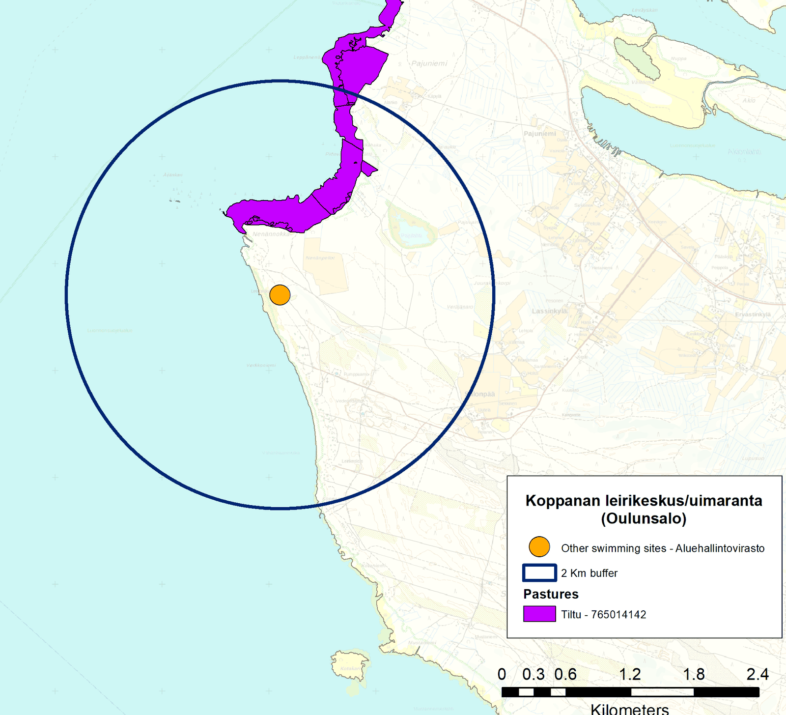

Geodatabase Administration for Rantalaidun
The challenge
As a GIS trainee at LUKE, the Rantalaidun project required digitising secure pasture areas, identifying optimal water sampling sites based on spatial criteria, producing maps for external stakeholders, and managing the large geodatabases underpinning the project.

The approach
ArcGIS Pro was used for spatial digitisation of pasture boundaries and multi-criteria site selection to identify water sampling locations where quality was most at risk. Professional cartographic outputs were generated for external company presentations. Geodatabases were maintained throughout the project lifecycle, ensuring data integrity and consistency.
Key outcomes
- Secure pasture boundaries digitised with high spatial accuracy in ArcGIS Pro
- Optimal water sampling sites identified through criteria-based spatial analysis
- Professional maps produced and presented to external project stakeholders
Built with
- ArcGIS Pro
- FileGDB
- Geodatabase Management
- Digitization
- GIS Analysis